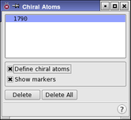

| Using | Features | Links |
This panel allows you to prevent chiral center inversion during Monte Carlo conformational searches by picking the chiral centers.
To open this panel, choose Chiral Atoms from the Search variables option menu in the CSearch tab of the Conformational Search panel and click Edit.
Because Monte Carlo conformational searches can generate and then minimize highly strained structures, chiral atoms in a molecule might be inverted. To prevent structures with inverted centers from appearing on the final list of optimized structures, you must identify a molecule’s chiral atoms before beginning a search. Once defined, the chirality of each center is compared against that in the starting structure. If inversion has occurred, the search result is rejected.
The simplest way to define chiral atoms is to click the Perform Automatic Setup button in the Conformational Search panel. A list of chiral atoms is generated. This list appears in the text box at the top of the panel.
If it is necessary to define chiral atoms manually, check that Define chiral atoms is selected (the default), and pick the atoms in the Workspace to add them to the list.
Chiral atoms are marked in peach with “R|S” labels beside them. The selected atom is colored turquoise. To hide these markers, deselect Show markers.

This list shows the atoms that define the chiral atoms to use in the calculations. You can select a line in the list to display or delete, or redefine the atom by picking a different atom.
If you clicked Perform Automatic Setup in the Conformational Search panel, this list contains the results of the setup when you open the panel.
Select this option to pick chiral atoms in the Workspace. Once an atom has been picked, a new entry is displayed in the chiral atoms list.
If this option is selected, Maestro places peach "star" markers on the atoms with "R/S" next to them. To distinguish the currently selected atom, its marker is colored turquoise.
To delete a defined chiral atom, select it by clicking on it in the list, or re-pick the atoms that define it, then click Delete.
To delete all the defined chiral atoms, click this button.